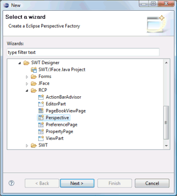
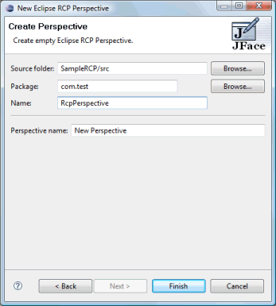
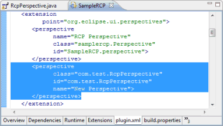
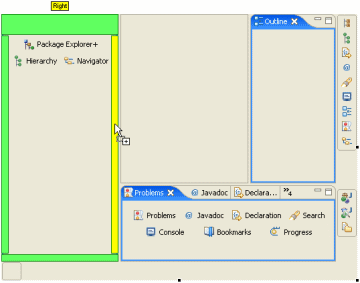
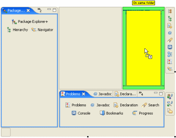
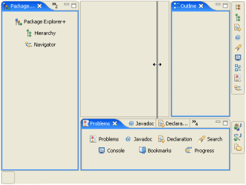
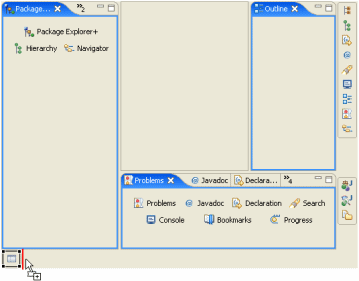
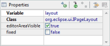

To use the wizard, select the project source folder and package to contain the class. Then enter the class name and editor name and hit the Finish button.
 
The wizard generates the following code.
- import org.eclipse.ui.IPageLayout;
import org.eclipse.ui.IPerspectiveFactory;
public class SamplePerspective implements IPerspectiveFactory {
public void createInitialLayout(IPageLayout layout) {
String editorArea = layout.getEditorArea();
addFastViews(layout);
addViewShortcuts(layout);
addPerspectiveShortcuts(layout);
}
private void addFastViews(IPageLayout layout) {
}
private void addViewShortcuts(IPageLayout layout) {
}
private void addPerspectiveShortcuts(IPageLayout layout) {
}
}
If the Perspective is created in an existing plugin project, the plugin.xml file is also updated with the appropriate perspective declaration.

Perspectives use their own unique palette. The first palette category, Local, contains a list of all of the views defined in the local plugin.xml file. Additional categories, such as Standard, Java, Debug and Misc, contain common views frequently used in perspectives. The actual categories shown will depend on prerequisite plugins defined by the current plugin (i.e., the Java category will only appear is the Eclipse JDT plugins are prerequisites of the current plugin. The last category, Perspectives, lists all of the perspectives available in the system.

Views may be dragged and dropped within the design area. Dropping one view on another will automatically create a folder. Views may be set as placeholders or dragged to the fast view dock at the bottom of the perspective or to the view shortcut dock to the right of the perspective. Perspectives may only be dragged to the perspective shortcut doc to the right of the perspective.




When the Perspective itself is selected in the property pane, its icon and name may be edited.
